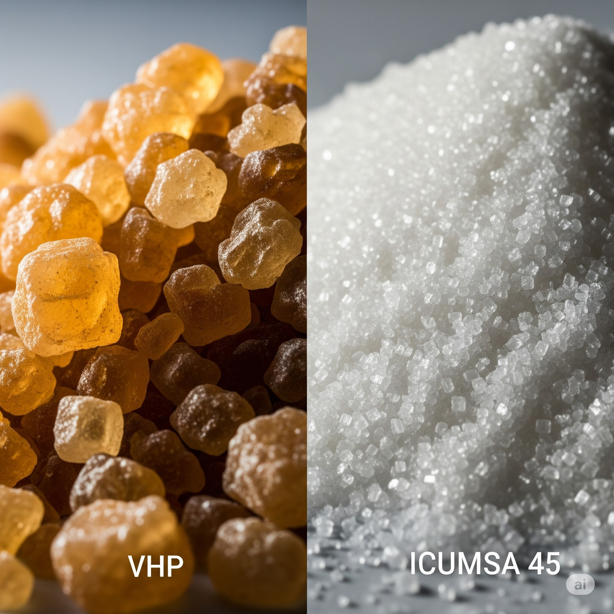

- ICUMSA 45: High-quality refined white sugar with exceptional purity. It is the international market standard and is widely used in the food and beverage industry.
- ICUMSA 100 and 150: High-quality white sugar, but with a slightly higher color than ICUMSA 45. It is a popular choice for consumers and for industrial use where color is not a critical factor.
- ICUMSA 600-1200 VHP (Very High Polarization): High polarization raw sugar, it is the main raw material for sugar refineries worldwide. It constitutes the bulk of international bulk sugar trade.

About Us: Experts in Global Food and Essential Goods Trade
At CVenesca Group LLC, we specialize in connecting global markets. We are dedicated to the international trade of food products, with a strong focus on ICUMSA sugar of various specifications (45, 150, 600-1200), and essential goods such as rice, corn, and vegetable oil. We offer comprehensive solutions ranging from sugar trading directly from the factory, to DDP import services in the USA and GACC certifications for China, ensuring secure, efficient, and profitable operations for our clients. Our expertise in strategic logistics and deep knowledge of global food markets enable us to guarantee success in every import and export process.
Mission, Vision, and Values
Mission
To drive international trade with efficient, secure, and sustainable logistical solutions that connect markets and generate value for our clients.
Vision
To be a leading company in global trade, recognized for its commitment to excellence, innovation, and sustainable economic development.
Values
- Integrity
- Responsibility
- Transparency
- Commitment
- Innovation
Our Services: Connecting Global Markets with Strategic Logistics Solutions

Global ICUMSA Sugar Trading
Access the best prices and qualities of ICUMSA sugar (45, 150, 600–1200). We supply the food, pharmaceutical, and bioenergy industries worldwide, ensuring quality and efficiency in every transaction.

DDP Import Services in USA
Simplify your imports to the USA with our service Delivery Duty Paid (DDP). We handle all management, from logistics to customs compliance and final delivery, so you have no worries.

GACC Certification for China Export
Facilitate your entry into the Chinese market. We offer GACC registration, Chinese labeling advisory, CIQ inspection management, and local agent support for your food exports to China.

Strategic International Trade Consulting
Drive your growth with our expert advisory. We conduct detailed market studies, plan your global expansion, and provide support in complying with international regulations to optimize your operations.

Trade of Essential Goods & Raw Materials
Beyond sugar, we are your partner for the trading of essential goods such as rice, corn, vegetable oil, and other key raw materials. We connect global supply and demand for staple products.

Poultry Trading (Frozen Chicken)
We supply high-quality frozen chicken and its parts (whole, thighs, breasts, wings) for the global market. We guarantee products that comply with strict sanitary and export standards, ideal for distributors and wholesalers.
ICUMSA Sugar Types
| Type | Color | Applications | Specifications |
|---|---|---|---|
| ICUMSA 45 | Bright White | Confectionery, beverages, pharmaceuticals | Polarization ≥ 99.8%, Moisture ≤ 0.04% |
| ICUMSA 150 | Opaque White | Bakeries, local beverages | Polarization ≥ 99.5%, Color ≤ 150 RBU |
| ICUMSA 600–1200 | Brown | Bioethanol, industrial fermentation | Raw sugar, high molasses content |
ICUMSA Sugar Gallery

ICUMSA 45
High-purity refined white sugar, ideal for direct human consumption and export.

ICUMSA 100
Standard white sugar for baking, beverages, and processed foods.

ICUMSA 150
Golden raw sugar for fermentation, distillation, and industrial processes.

ICUMSA 600–1200 VHP
High polarization sugar for industrial refining and bulk export.
ICUMSA Sugar Technical Comparison
| Attribute | ICUMSA 45 | ICUMSA 100 | ICUMSA 150 | VHP |
|---|---|---|---|---|
| Color | ≤ 45 | ≤ 100 | ≤ 150 | 600–1200 |
| Polarization | ≥ 99.80% | ≥ 99.70% | ≥ 99.50% | ≥ 99.40% |
| Moisture | ≤ 0.04% | ≤ 0.06% | ≤ 0.08% | ≤ 0.10% |
| Ash Content | ≤ 0.04% | ≤ 0.07% | ≤ 0.10% | ≤ 0.15% |
Download Technical Datasheets

Poultry: High-Quality Frozen Chicken for Export
At CVenesca Group LLC, we expand our portfolio to include premium quality frozen chicken and its various parts, ensuring supply to global markets. We offer a variety of cuts, including whole chickens, thighs, breasts, and chicken wings, all processed and frozen under the strictest international standards of hygiene and food safety.
Our poultry products are ideal for distributors, wholesalers, and food chains looking for reliable frozen chicken meat suppliers with consistent volumes and competitive prices. We ensure that each shipment complies with the import and export regulations of each country, facilitating a smooth and efficient supply chain.
Available Cuts:
- Whole Frozen Chicken: Standard and premium sizes.
- Frozen Chicken Thighs: Bone-in or boneless, with or without skin.
- Frozen Chicken Breasts: Boneless, skinless (single breast or fillet).
- Frozen Chicken Wings: Whole or in sections (drumettes, flats).
- Other cuts upon request: Leg quarters, paws, giblets, etc.
POULTRY
FROZEN CHICKEN

At CVenesca Group LLC, we are pleased to offer a wide range of high-quality frozen chicken cuts, sourced from strategic partners in Brazil, Russia, and Iran. Our poultry products are processed and frozen under strict international regulations, ensuring freshness, flavor, and safety to meet the demands of distributors, wholesalers, and the food industry globally.
Our offering includes a variety of popular cuts, ready for import and distribution in different markets.
Our Frozen Chicken Cuts:

Whole Frozen Chicken
Whole chickens of different sizes, ideal for roasting or for being cut according to customer needs.

Frozen Chicken Thighs
Juicy and flavorful thighs, with or without skin, perfect for a variety of preparations.

Frozen Chicken Breasts
Boneless and skinless breasts, a lean and versatile cut in high demand.

Frozen Chicken Wings
Whole wings or in sections (drumettes and flats), ideal for appetizers and main dishes.

Frozen Chicken Necks
Chicken necks, used for broths, soups, and other culinary preparations.

Frozen Chicken Livers
Fresh and frozen chicken livers, rich in nutrients.

Frozen Chicken Hearts
Chicken hearts, a flavorful and versatile ingredient for various recipes.
Packaging and Transportation
Our frozen chicken is carefully packed in high-strength corrugated cardboard boxes with polyethylene bags inside to protect the quality during storage and transportation. We offer customized packaging options according to customer needs. Transportation is carried out in refrigerated containers, maintaining the appropriate temperature to preserve the freshness and quality of the product throughout the journey.
Countries of Origin
We work with reliable suppliers in Brazil, Russia, and Iran, countries recognized for their high standards in poultry production.
Sales Procedure and Incoterms
Our sales procedures are adapted to the needs of each client. We generally work with CIF (Cost, Insurance and Freight) and FOB (Free On Board) Incoterms. Contact us to discuss the specific terms of your order.
GACC Certifications
The poultry products we trade, especially those destined for the Chinese market, have the necessary GACC (General Administration of Customs of the People's Republic of China) certifications to guarantee their entry and distribution in that country. We ensure compliance with all required health and regulatory standards.
Technical Specifications
Detailed technical specifications for each of our frozen chicken cuts, including certifications and quality analysis, will be available for download soon.
Interested?
If you are interested in learning more about our frozen chicken and its parts offer, or wish to request a quote, please do not hesitate to contact us. Our team will be happy to assist you.
Sugar Market Projections (2025/2026)
A comprehensive analysis of production capacities, market projections, port logistics, and key players for ICUMSA 45, 100, 150, and 600-1200 VHP sugar grades, based on government and industry reports. The global sugar market for the 2025/2026 period is shaping up as a scenario of readjustments, with divergent projections for the main exporting countries.
Types of Sugar and their Markets

Visual comparison of VHP and refined ICUMSA 45 sugar.
Brazil: The Giant Continues to Lead

The immensity of mechanized sugarcane harvesting in Brazil.
Projections and Production Capacity
Organizations such as Brazil's National Supply Company (CONAB) project a slight decrease in sugarcane harvest for the 2025/2026 crop year. However, sugar mills are expected to maximize sugar production at the expense of ethanol, which could lead to record sugar production. Brazil's production capacity allows it to offer all ICUMSA grades, with a strong focus on VHP sugar and ICUMSA 45.
Supply Capacity and Ports
Brazil has a robust port infrastructure for sugar export. The Port of Santos is the world's main sugar export port, with mechanized terminals exceeding 2,000 tons per hour. The combined monthly supply capacity of Brazilian ports can exceed 3 million metric tons. The Port of Paranaguá is the second most important.
Key Institutions and Certifications
Production assessment is led by the National Supply Company (Conab). Associations such as UNICA also collect key data. Exports are certified by organizations like SGS and Bureau Veritas. Key documents include Quality and Weight Certificate, Certificate of Origin (FIESP), Phytosanitary Certificate (MAPA), and Bill of Lading.
Thailand: Towards Recovery
Projections and Production Capacity
A significant recovery in sugarcane production is expected for the 2025/2026 crop year, thanks to favorable monsoon rain forecasts. The Office of the Cane and Sugar Board (OCSB) is the government agency that oversees production and export. Thailand is an important producer of VHP sugar and also offers refined white sugar.
Supply Capacity and Ports
Export logistics are concentrated at Laem Chabang Port (the largest with modern facilities) and Bangkok Port. Monthly supply capacity can reach peaks of over 1 million tons.
Key Institutions and Certifications
The OCSB is the main government agency responsible for overseeing and publishing official statistics. The Thai Sugar Millers Corporation (TSMC) also provides detailed data. Essential documents include Quality and Weight Certificate, Certificate of Origin (Chamber of Commerce), Phytosanitary Certificate, and OCSB Sugar Export License.

Sugar loading logistics at an export port.
European Union: Contracting Production and Focus on Domestic Market

Sugar beet harvest, a key raw material in Europe.
Projections and Production Capacity
The European Commission projects a decrease of about 8% in sugar production for the 2025/2026 campaign, due to reduced cultivated area and pest challenges. Production focuses on white beet sugar (ICUMSA 45 and 150) for domestic consumption and limited exports.
Main Producing Countries and Ports
France and Germany are the largest producers. Exports are made through ports such as Antwerp (Belgium), Le Havre (France), and Hamburg (Germany). Logistics include transport by truck, train, and barge.
Key Institutions and Certifications
The DG AGRI of the European Commission compiles and publishes forecasts. The European Association of Sugar Manufacturers (CEFS) also publishes detailed statistics. Documents include Quality Certificate, EUR.1 Certificate of Origin, and Single Administrative Document (SAD).
General Considerations to Take into Account
- Climate Volatility: Extreme weather events are the main risk factor that can alter production projections.
- Government Policies: Decisions on ethanol blending (Brazil), subsidies, and trade policies (EU) impact sugar availability for export.
- Freight and Logistics Costs: Port congestion, container availability, and fuel costs are critical variables affecting the final price.
- Global Demand: Consumption growth in emerging markets (Asia and Africa) will continue to be a key driver of global sugar demand.
In summary, the 2025/2026 period presents a complex and dynamic landscape. Buyers should closely monitor harvests in Brazil and Thailand for sugarcane sugar supply, while the EU beet sugar market will focus more on its domestic demand. Supply reliability will depend not only on agricultural production but also on the efficiency and capacity of logistics and port supply chains.